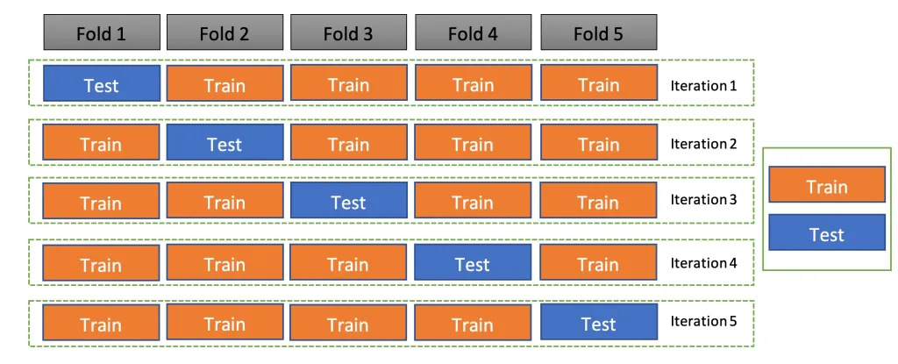
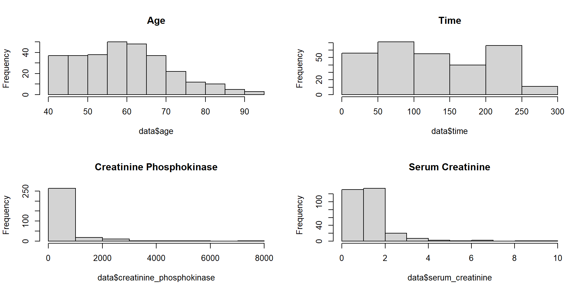
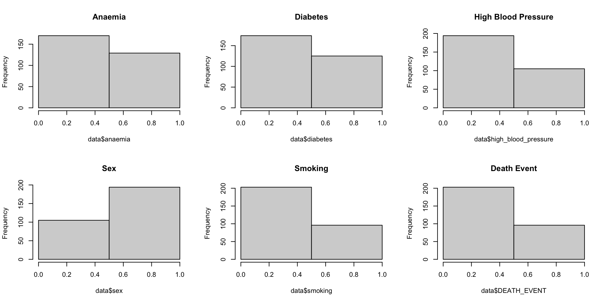
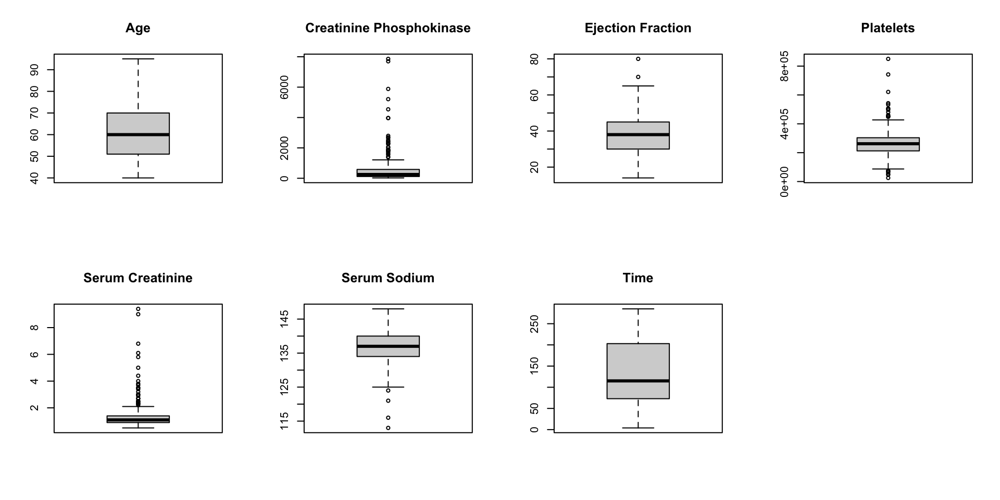
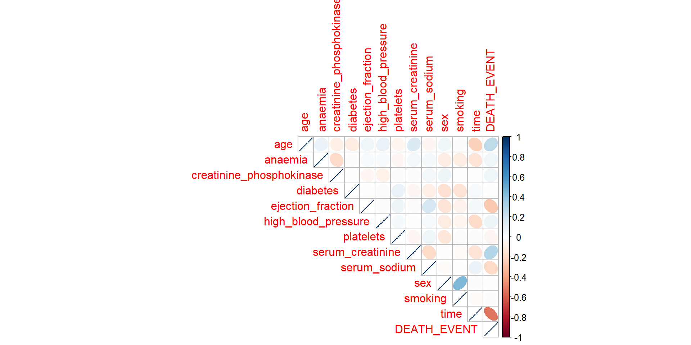
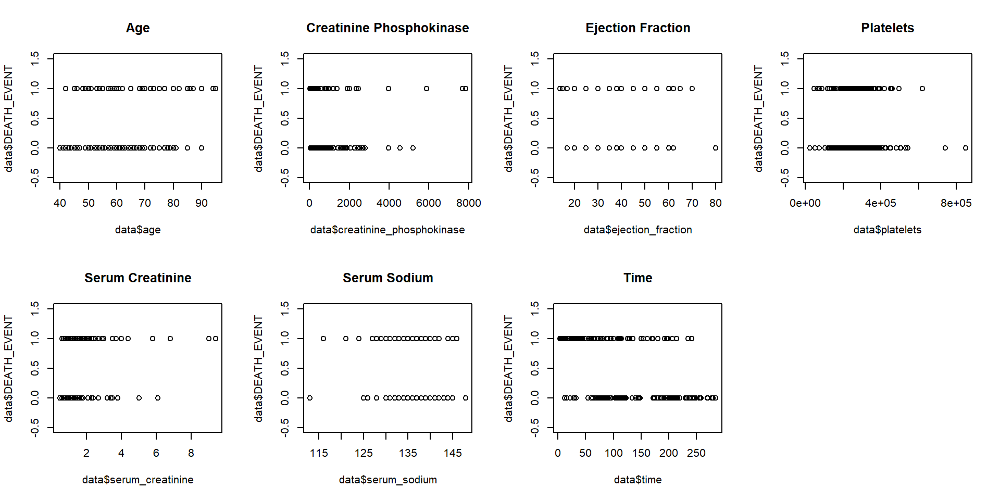

2024-04-14
Cross-validation is a cornerstone methodology in the field of data science, essential for assessing the predictive performance of statistical models and ensuring their generalizability to unseen data. This resampling technique allows researchers to evaluate how models will perform in practice, addressing critical challenges like overfitting and underfitting, thereby ensuring robustness and reliability of model predictions across various data subsets.
This is one of the more simple methods of cross-validation and tends to be less time-consuming to conduct (Yadav and Shukla 2016). It divides data into a training set and a test set, usually in a 70-30 or 90-10 split.
Using random sampling without replacement from certain probability distributions when splitting your data sets (James 1980). It aims to decrease overfitting by allowing the algorithm to better explore the experimental space.
The dataset is split into k equally sized folds. Each fold is used once as a test set while the rest serve as the training set.
This is a special case of k-fold cross-validation where k equals the number of data points (Shao and Er 2016). Each data point is used once as a test set.
Ensures each fold reflects the class proportions in the dataset, particularly useful for imbalanced datasets.
Repeats the K-Fold process multiple times and averages the results.
The perspective of Berrar is enriched by (Schaffer 1993), who explores the significance of cross-validation in selecting optimal classification methods, highlighting its necessity in dealing with imbalanced datasets through stratified approaches.
(Zhang and Yang 2015) delve into the strategic use of cross-validation for model selection, particularly in high-dimensional settings, challenging traditional approaches and proposing the integration of AIC and BIC for optimal model estimation. AIC (Akaike Information Criterion) and BIC (Bayesian Information Criterion) are both measures used to evaluate the quality of a statistical model, often in the context of model selection. While they are not directly used for cross-validation, they serve a similar purpose in helping to choose between different models by considering both the goodness of fit and the complexity of the model.
Likewise, (Wong and Yeh 2019) contribute to the discourse by examining the reliability of accuracy estimates derived from k-fold cross-validation, cautioning against the uncritical increase of replications without considering the correlation between them, and recommending specific strategies for achieving more dependable accuracy estimates. More specifically, their experiments across 20 datasets indicate that accuracy estimates from different replications of k-fold cross-validation are generally highly correlated, especially as the number of folds increases. They instead recommend using a larger number of folds with fewer replications for performance evaluation. Particularly, their research concludes that ten-fold cross-validation yields the most significant scores among k-fold cross-validation techniques. A similar conclusion of the optimal for k is shared by (Marcot and Hanea 2021), as their evidence from their study that explores the ideal value of k for k-fold cross-validation analysis showed that the ideal value of k is 10, however, 5 can be sufficient in some cases.
Ultimately, in statistical analysis, researchers are constantly innovating and refining cross-validation techniques to enhance model performance and address challenges associated with existing methodologies. (Filzmoser, Liebmann, and Varmuza 2009) sought to explore a method intended to improve the reliability and predictive accuracy of complex linear models, particularly those developed from small datasets, and to provide more accurate prediction error estimates for future observations. Their investigation was centered around the concept of repeated double cross-validation (rdCV), an advanced technique that entails a dual-phase partitioning of the dataset.
The initial phase involves dividing the data into training and testing sets, which serves as the foundation for prediction accuracy estimation. Subsequently, the second phase employs the training set from the first division in a further round of cross-validation. This dual-loop process is repeated multiple iterations, generating a comprehensive set of predicted outcomes. The aggregate of these outcomes not only facilitates the enhancement of the model’s performance but also aids in the more precise estimation of the variability in the model’s predictions.
Another technique, introduced by (Xu et al. 2018) is Representative Splitting Cross-Validation (RSCV), aiming to enhance the representativeness and uniformity of calibration and validation sets in experimental studies, with an emphasis on its utility for latent variable selection. This method employs the DUPLEX algorithm for data segmentation, followed by k-fold cross-validation on the divided sets.
Building on this, (Rabinowicz and Rosset 2022) explore the influence of correlation structures on cross-validation effectiveness, proposing a bias-correction measure, CVc, to address potential biases. This correction is unnecessary when dataset splitting maintains the distributional relationship between training and testing sets, ensuring unbiased cross-validation. Their analysis showed that CVc more accurately estimates generalization error compared to traditional cross-validation, remaining unbiased provided the covariance structure is correctly specified, even without the ideal prediction method. This research contributes to refining cross-validation techniques, particularly in handling complex data correlations.
Finally, (Lei 2020) introduces a method called Cross-Validation with Confidence (CVC) aimed at reducing overfitting, a common problem with traditional cross-validation that uses small splits and ends up with too-simple models. CVC works by checking the predicted risk of different models and using p-values to choose models that best fit without being overly complex. It has proven effective, particularly when dealing with a decent amount of data and models that don’t use too many predictors, resulting in simpler, easy-to-understand predictive models. However, CVC hasn’t yet been applied to unsupervised learning or models with binary outcomes, pointing out areas for further exploration.
Collectively, these papers illuminate the multifaceted nature of cross-validation, showcasing its critical role in model evaluation, selection, and generalization. From theoretical underpinnings to practical implementations, cross-validation emerges as an essential tool in a data scientist’s arsenal, ensuring models are not only predictive but also generalizable across diverse datasets and contexts.
There are many techniques of cross-validation, the one being used depending on what needs to be accomplished. Many of which, mentioned in the introduction. The following will introduce some of those important techniques.
Single hold-out cross-validation is one more simple versions of cross-validation being used (Yadav and Shukla 2016). The dataset gets divided into a training set and validation, or hold-out, set. The training set is used to fit a model, which is then used for prediction on the validation set. The performance of the model is then determined by the variance between the predictions and the actual data. One of the main drawbacks of this method is that the training set and validation set can have different distributions, causing potentially unreliable models (Santos et al. 2023).
(Jung and Hu 2015) introduce an advanced k-fold averaging cross-validation procedure, advocating for the averaging of parameter estimates across folds to yield more stable and efficient outcomes. This method demonstrates significant potential in handling high-dimensional data and improving parameter estimation.
For the k-fold cross-validation process, the steps are as follows and see Figure 1:
Randomly and evenly split the dataset into k-folds.
Use k-1 folds as the training set to fit the model.
Predict the response variable in the hold-out (kth) fold using the fitted model.
Calculate the prediction error for the response variable in the hold-out fold.
Repeat steps 2-4 k times, using each fold as a hold-out once.
Calculate the overall test predictors by averaging all k test predictors.

Source: (Ranjan 2021)
The MSE calculation using K-folds is as follows (Jung and Hu 2015):
\[ CV(k) = \frac{1}{k} \sum_{i=1}^{k} MSE_i \tag{1} \]
For clarity, the difference between K-folds and repeated K-folds, another method mentioned earlier, is as follows:
Repeated K-Fold Cross-Validation enhances the robustness of K-Fold by repeating the process multiple times and averaging the results. This method helps to reduce the variability of the single trial of K-Fold cross-validation, providing a more accurate estimate of the model’s ability to generalize to unseen data. Here’s the process:
Repeated Splitting: The data is split into k folds as before, but this process is repeated n times, with a different random split each time.
Model Evaluation: Just like in K-Fold, models are trained and evaluated k times on each repetition with different splits, leading to n*k total evaluations.
Final Estimation: The scores across all repeats are aggregated to provide a final measure.
Notably, this technique of repeated K-Folds is especially useful when the data set is not too large and there is a need to ensure the stability of the evaluation metrics across different splits of the data.
Leave-one-out cross-validation (LOOCV) is a variation of k-fold cross-validation in that the dataset gets divided into multiple folds to be used for training and validation sets, then the model gets fitted and evaluated until each fold has been used as the validation set. However, for LOOCV, the validation set is comprised of a single observation, so k is equal to the sample size (Shao and Er 2016). This method can be preferable to other methods when the sample size is small because the lack of randomness when dividing the dataset causes the accuracy estimate of the models to be constant (Wong 2015).
Monte Carlo Cross-Validation (MCCV) is another commonly used method. Similar to the k-folds technique, MCCV randomly removes significant chunks of the dataset without replacement to use as its training and validation (\(s_v\)) data sets (Haddad et al. 2013). This sampling is repeated N times. The criterion for this techniques, according to (Haddad et al. 2013), is as follows:
\[ MCCV_{n_v}(\phi)=\frac{1}{Nn_v}\sum_{i=1}^{k}(y_{(s_v)(i)}-\hat{y}_{\phi(s_v)(i)})^2 \tag{2} \]
One of the appeals of MCCV over some other techniques its reduced computational complexity compared to other techniques, such as LOOCV(James 1980).
In terms of the mathematical methodology, the article by Jung and Hu (2015) provides important equations for calculating the mean squared prediction error (MSPE) and mean squared error (MSE) as metrics to evaluate model performance.
The MSE is the expectation of the squared norm of the difference between the estimated and the true parameter vectors, and can be calculated as:
\[ MSE = \sum_{i=1}^{p} (\hat{\beta}_i - \beta_i)^2 \tag{3} \]
where \(\hat{\beta}_i\) is the estimated value of the \(i\)-th parameter, \(\beta_i\) is the true value of the \(i\)-th parameter, and \(p\) is the total number of parameters. The lower the MSE, the better the model’s predictions match the actual data.
The overall test predictors are evaluated using the MSPE, calculated as:
\[ MSPE = \frac{1}{K} \sum_{i=1}^{K} MSE_i \tag{4} \]
where MSEi is the mean squared error for the ith fold, and K is the number of folds (Jung and Hu 2015).
Related, in statistical modeling, \(R^2\), also known as the coefficient of determination, is a measure that indicates the proportion of the variance in the dependent variable that is predictable from the independent variables. It provides a sense of how well the independent variables predict the dependent variable; the closer \(R^2\) is to 1, the better the model explains the data.
This can be written as:
\[ R^2 = 1 - \frac{\sum{(y_i - \hat{y})^2}}{\sum{(y_i - \bar{y})^2}} \tag{5} \]
where \(\bar{y}\) is the mean value of \(y\) (Ott and Longnecker 2015).
Ultimately, \(R^2\) and MSE are related in that they both measure the model’s performance, but they do it in different ways. While \(R^2\) measures the proportion of variance explained by the model, MSE measures the average error of the model’s predictions. In the context of cross-validation, both metrics can be used to compare models: a higher \(R^2\) and a lower MSE would typically indicate a better predictive model.
Another performance metric that will be used to determine model performance is the area under the ROC curve (AUC). AUC conveys how well a model can differentiate between different classes, and it is preferable to other metrics, such as accuracy, because it accounts for both specificity and sensitivity (Cantor and Kattan 2000). AUC scores can range from 0 to 1, with 0 indicating the model has no ability to discern between classes, and 1 indicating the model perfectly predicts classfication. Figure 6 demonstrates how AUC uses the positive and negative outcomes to calculate a value that indicates the probability of a positive result ranking higher than negative results, where \(S_p\) is the total number of positive outcomes ranked, and \(n_p\) and \(n_n\) are the number of positive and negative outcomes, respectively (Hossin and Sulaiman 2015).
\[ AUC = \frac{S_p-n_p(n_n+1)/2}{n_pn_n} \tag{6} \]
This heart failure clinical records dataset, obtained via the UC Irvine Machine Learning Repository, contains the medical records of 299 patients who had heart failure, collected during their follow-up period, where each patient profile has 13 clinical features (Chicco and Jurman 2020).
More specifically, the dataset comprises medical records of 299 heart failure patients from Faisalabad, Pakistan, collected between April and December 2015. It includes 13 clinical, body, and lifestyle features, both categorical and continuous. The dataset was used to facilitate machine learning predictions on patient survival based solely on serum creatinine and ejection fraction levels. Various machine learning and biostatistical methods were employed for binary classification of survival, feature ranking, and to examine the predictability of survival using the mentioned key features. This study aims to demonstrate the potential of specific biomarkers in predicting heart failure outcomes and to streamline the prediction process for medical practitioners. Notably, (Rooij and Weeda 2020) highlight the ways in which cross-validation can be implemented on a dataset, such as ours, through different cross-validation methods and techniques.
Our data description is as follows:
| Variable | Type | Characteristic |
|---|---|---|
| Age | Predictor | Integer |
| Anaemia | Predictor | Binary (1 = anemic, 0 = not) |
| creatine_phosphokinase | Predictor | Integer |
| Diabetes | Predictor | Binary (1 = diabetic, 0 = not) |
| ejection_fraction | Predictor | Integer |
| high_blood_pressure | Predictor | Binary (1 = HBP present, 0 = no HBP) |
| Platelets | Predictor | Continuous |
| serum_creatinine | Predictor | Continuous |
| serum_sodium | Predictor | Integer |
| Sex | Predictor | Binary (1 = M, 0 = F) |
| Smoking | Predictor | Binary (1 = smoker, 2 = not a smoker) |
| Time | Predictor | Integer |
| death_event | Response | Binary (1 = death, 0 = no death) |

The age of patients ranged from 40 to 95 years old, which the majority aged below 70 years old. The time variable is the number of days in the follow-up period for each patient, ranging from 4 to 285 days. Creatinine phosphokinase indicates the level of this enzyme in the patient’s blood, which is present when muscle tissue is damaged (Chicco and Jurman 2020). The serum creatinine is created by this creatinine when muscle breaks down (Chicco and Jurman 2020), so this variable was included as another potential indicator of injury. Variables were included that observe the levels of sodium (serum sodium) and number of platelets in the patient’s blood. The ejection fraction variable is the percentage of blood leaving the left ventricle during each contraction of the heart (Chicco and Jurman 2020).

All of our categorical variables are Boolean and are encoded as ‘0’ and ‘1’ to indicate negative or positive occurrence of a variable’s condition, respectively. These variables include whether the patient is a smoker, has diabetes, anaemia, or high blood pressure. The sex variable indicates whether the patient is a female (‘0’) or male (‘1’). Our target variable, death event, indicates whether the patient died before the end of the follow-up period.
age anaemia creatinine_phosphokinase
0 0 0
diabetes ejection_fraction high_blood_pressure
0 0 0
platelets serum_creatinine serum_sodium
0 0 0
sex smoking time
0 0 0
DEATH_EVENT
0 We found the total number of missing values for each variable, and none were found. The analysis can continue without deleting rows or imputation of values.

Boxplots for our continuous variables were created in our exploratory analysis to evaluate if any variables have outlier that need to be addressed. The boxplots do indicate that some of our variables have potential outliers, namely creatinine phosphokinase, ejection fraction, platelets, serum creatinine, and serum sodium. However, these data points will remain untouched for our analysis. The indicated outlier do not appear to be recording errors, such as a negative time variable or unrealistic age. The outliers in the boxplots appear to be genuine observations and should be considered in our model. The original article also did not remove any outliers (Chicco and Jurman 2020.)
The majority of the variables do not appear to have a significant correlation to the other. The most significant was between the time variable and our target variable, death event. There’s a negative relationship, meaning the patients who had more days in the follow-up period tended to survive through the end of the follow-up period. There was a slight positive correlation between sex of the patient and smoker status, meaning more male patients tended to be smokers than female patients.


# A tibble: 1 × 4
M1_K5_MSE M2_K5_MSE M1_K5_AUC M2_K5_AUC
<dbl> <dbl> <dbl> <dbl>
1 0.133 0.182 0.868 0.756With any variation of k-fold cross validation, the dataset is split into k sized folds that will all be equal. Here, the dataset is split in 10 folds. As previously discussed, (Wong and Yeh 2019) mentions 10-fold cross validation analysis to be most effective in most cases. In model 1, all predictor variables are included. In model 2, only ejection fraction and serum creatinine are included, as the researchers that provided the data set came to the conclusion that death events could be predicted using those 2 variables alone. Interestingly enough, the first model that included all variables produced a lower MSE (mean square error), indicating that from this CV test, model one would be better to use than model 2.
# A tibble: 1 × 4
M1_K5_MSE M2_K5_MSE M1_K5_AUC M2_K5_AUC
<dbl> <dbl> <dbl> <dbl>
1 0.136 0.180 0.872 0.759Similar to the 10-fold models above, our dataset is split into equal pieces. However, in this case, we are only doing 5 folds compared to our 10-fold analysis above. Again, in model 1, all predictor variables are included. In model 2, only ejection fraction and serum creatinine are included. With 5-fold cross validation, the data set is divided into 5 parts (as opposed to 10 in 10-fold). Model 1 still has a lower MSE than the full model that includes all predictor variables.
obs DEATH_EVENT yhat_m1_SHO sqerr_m1_SHO yhat_m2_SHO sqerr_m2_SHO age anaemia
1 4 1 1.954605 0.9112698 0.4937831 2.562556e-01 50 1
2 5 1 3.929549 8.5822549 1.0210942 4.449632e-04 65 1
3 10 1 4.648967 13.3149595 4.7305118 1.391672e+01 80 1
4 14 1 0.138805 0.7416568 -0.8817033 3.540807e+00 50 1
5 16 1 2.162099 1.3504749 -1.3153256 5.360733e+00 82 1
6 19 1 2.324967 1.7555370 -0.3350461 1.782348e+00 70 1
creatinine_phosphokinase diabetes ejection_fraction high_blood_pressure
1 111 0 20 0
2 160 1 20 0
3 123 0 35 1
4 168 0 38 1
5 379 0 50 0
6 125 0 25 1
platelets serum_creatinine serum_sodium sex smoking time
1 210000 1.9 137 1 0 7
2 327000 2.7 116 0 0 8
3 388000 9.4 133 1 1 10
4 276000 1.1 137 1 0 11
5 47000 1.3 136 1 0 13
6 237000 1.0 140 0 0 15# A tibble: 1 × 4
M1_SHO_MSE M2_SHO_MSE M1_SHO_AUC M2_SHO_AUC
<dbl> <dbl> <dbl> <dbl>
1 7.45 1.69 0.837 0.820Using the Single Hold-Out Method, the data set is split into a training set and a test/validation set. Here, we are using a 50-50 split. After conducting the analysis, it can be seen that model 2 provides us with a lower mean squared error. Model 2 includes only ejection fraction and serum creatinine as predictor variables, meaning this reduced model is a better fit according to this cross-validation technique.
# A tibble: 1 × 4
`M1 LOOCV MSE` `M2 LOOCV MSE` `M1 LOOCV AUC` `M2 LOOCV AUC`
<dbl> <dbl> <dbl> <dbl>
1 0.134 0.182 0.827 0.742Leave-One-Out cross-validation (LOOCV) follows a similar data set splitting technique, but in this case, the data is split k-ways, where k is equal to the number of data points. According to LOOCV, the full model (which includes all predictor variables) is a better fit due to a lower mean squared error compared to the reduced model (which only includes serum creatinine and ejection fraction).
# A tibble: 1 × 4
M1_MCCV_MSE M2_MCCV_MSE M1_MCCV_AUC M2_MCCV_AUC
<dbl> <dbl> <dbl> <dbl>
1 0.139 0.183 0.864 0.763For the Monte Carlo technique, logistic regression will be used to create the models. Unlike previous techniques, a resampling function was created to repeat the splitting of the data many times. Our proportion of training to validation sets is the standard 70/30 split, and the data will be resampled 100 times. For the MSE of the models, we’ll be using the Brier score as our resampling fitting function generates the Brier score automatically, and it performs similarly to MSE in classification problems (Ferro and Fricker 2012). Similar to the previously discussed techniques, our full model had the lower MSE/ Brier score and higher AUC. The smaller model’s AUC of 0.763 is still acceptable as far as the metric’s ideal scores go, but the increase of about 0.1 indicates there might be another predictor or two that could contribute significantly to the model.
CV M1_MSE M1_AUC M2_MSE M2_AUC
1 10-Fold 0.1327269 0.8675932 0.1816103 0.7559824
2 5-Fold 0.1355044 0.8719124 0.1798165 0.7585011
3 Single Hold-Out 7.4504247 0.8374603 1.6855614 0.8203175
4 LOOCV 0.1342105 0.8271048 0.1815950 0.7423519
5 MCCV 0.1393454 0.8644844 0.1831616 0.7633794This paper shows various cross-validation techniques that can be used for modeling validation, including single hold-out, 5 & 10 k-folds, leave-one-out, and Monte Carlo cross-validation.
While the researchers that provided the dataset found that survival of heart attack patients can be predicted using only serum creatinine and ejection fraction as predictor variables. The linear regression analysis we conducted using various cross-validation techniques has shown that the full model (which includes all predictor variables within the dataset) has a lower mean squared error (MSE) after testing. This essentially means the full model is more robust with predictive ability compared to the reduced model. That being said, the difference in MSEs between the two models is marginal, however, the full model by technicality does have slightly more predictive ability.
The marginal difference between models supports the argument made by the researchers because the model with two predictor variables and the model with twelve predictor variables produced small differences in MSEs as seen in the analysis above; models with less predictor variables are typically preferred in statistical analysis.
Ultimately, while the k-folds CV technique (particularly 10 folds) seemed to perform the best, most of these techniques seem sufficient to help validate a model based on this example.